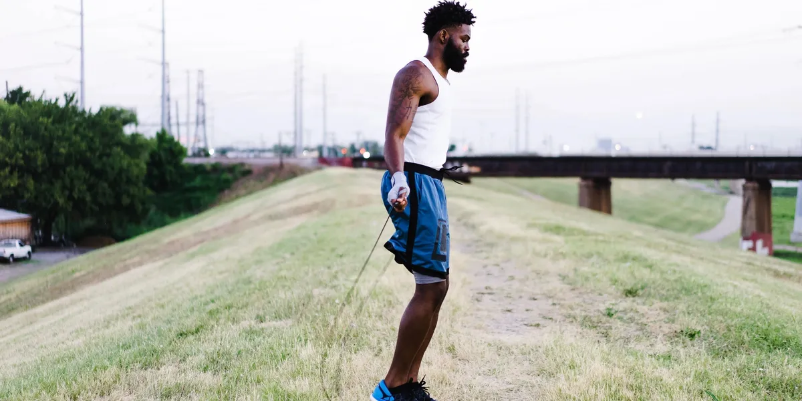

About Me My BackgroundI began studying HTML and CSS in February 2022 and even subscribed to a skillshare online course to learn web development, which I completed in March 2022. I started working on new projects to improve my web development abilities, but I never finished any projects owing to my lack of math skills. After enrolling in DepEd ALS, I began developing my first ever newly published website. I start working on the new design for the website every day. The website is all about the projects, activities, and modules I've worked on for my website. |
|---|